앞에서는 비교식과 if로 실행할 코드를 선택했습니다. 이번에는 입력 범위를 확인하고, 여러 조건을 조합해 프로그램을 만듭니다.
- 독립된
if와else if의 차이를 구분합니다. - 중첩 조건문과 문자열 비교를 사용합니다.
switch로 메뉴 번호에 맞는 동작을 선택합니다.
1. 독립된 if와 연결된 조건문
독립된 if는 조건을 각각 검사합니다. if ~ else if는 위에서부터 검사하고 처음 참인 경우 하나만 실행합니다.
파일 이름은 ConditionFlow.java로 저장합니다.
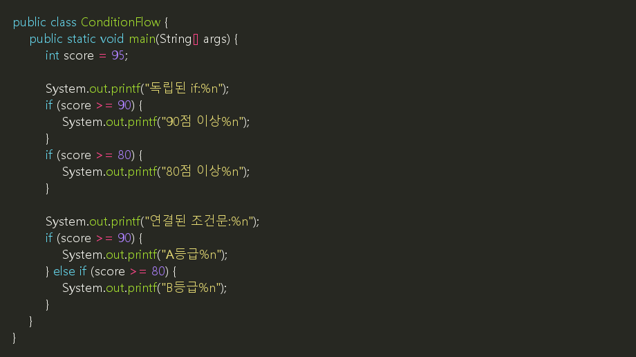
예상 실행 결과:
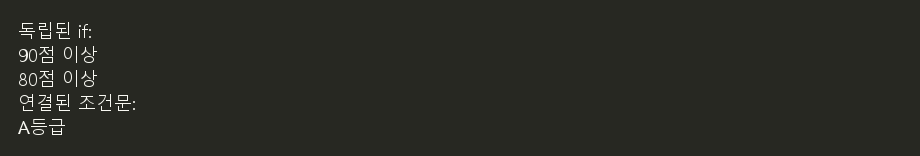
📌 여러 안내를 각각 출력하려면 독립된 if를 사용합니다. 등급처럼 하나만 선택하려면 연결된 조건문을 사용합니다.
1.1 예: 짝수와 홀수 판별하기
정수를 2로 나눈 나머지가 0이면 짝수이고, 그렇지 않으면 홀수입니다. %는 나눗셈의 나머지를 구하는 연산자입니다. 짝수와 홀수 중 하나만 해당하므로 if ~ else로 연결합니다.
파일 이름은 EvenOddCheck.java로 저장합니다.
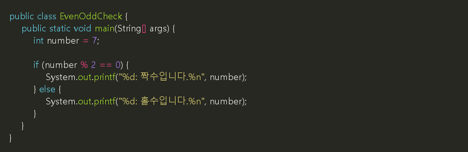
예상 실행 결과:

number를 8, 0, -3으로 바꾸면 각각 짝수, 짝수, 홀수로 판별됩니다.
⚠️ 홀수를 number % 2 == 1로만 검사하면 음수인 홀수를 놓칠 수 있습니다. 짝수 조건의 else 또는 number % 2 != 0을 사용합니다.
2. 입력 범위를 먼저 확인하기
점수가 0~100 범위를 벗어나면 등급을 매기지 않아야 합니다. 잘못된 범위를 먼저 검사하면 뒤의 조건을 이해하기 쉽습니다.
파일 이름은 GradeCheck.java로 저장합니다.
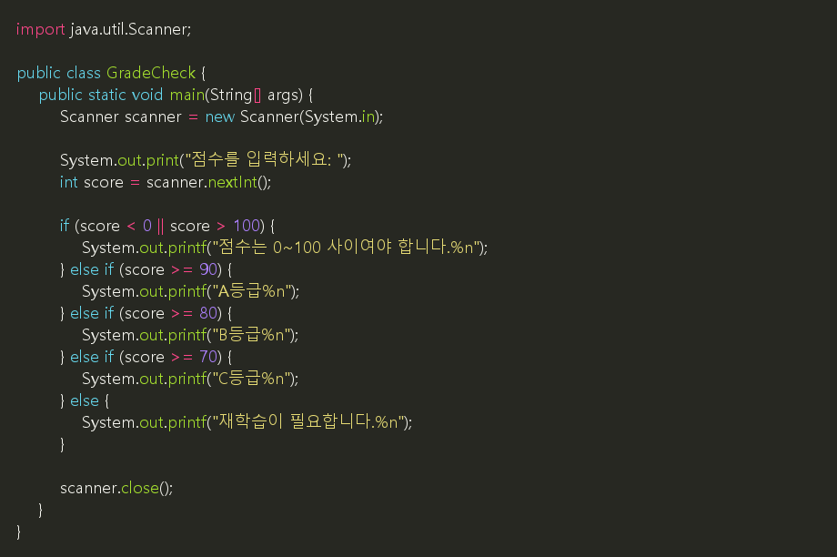
예상 실행 화면:
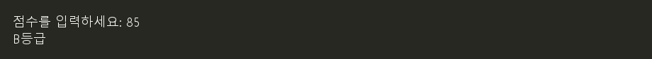
| 입력 | 예상 판정 |
|---|---|
-1, 101 |
범위 안내 |
0, 69 |
재학습 필요 |
70, 79 |
C등급 |
80, 89 |
B등급 |
90, 100 |
A등급 |
💡 참고: 조건이 달라지는 지점의 값을 경계값이라고 합니다. 89와 90처럼 경계 바로 앞뒤의 값을 넣어 보면 조건 오류를 찾기 쉽습니다.
3. Java·Python·JavaScript·NumPy 논리 연산자 비교
같은 조건도 언어나 다루는 데이터에 따라 연결하는 방법이 다릅니다. 아래에서 a, b는 참·거짓 값입니다. NumPy에서는 참·거짓 값이 들어 있는 배열입니다. 배열은 여러 값을 모아 놓은 자료 구조입니다.
| 판단 | Java | Python | JavaScript(JS) | NumPy 비트 연산자<br>참·거짓 배열에 적용 | NumPy 논리 함수 |
|---|---|---|---|---|---|
| AND: 둘 다 참 | a && b |
a and b |
a && b |
a & b |
np.logical_and(a, b) |
| OR: 하나 이상 참 | a || b |
a or b |
a || b |
a | b |
np.logical_or(a, b) |
| NOT: 참·거짓 뒤집기 | !a |
not a |
!a |
~a |
np.logical_not(a) |
💡 참고: NumPy는 Python에서 배열 계산을 돕는 라이브러리입니다. import numpy as np로 불러오면 np라는 짧은 이름으로 사용합니다.
⚠️ NumPy의 비트 연산자와 논리 함수는 서로 다른 연산입니다. 위처럼 참·거짓 배열에 적용하면 결과가 같지만, 정수 배열에서는 아래처럼 달라집니다.
| 입력 원소 | 비트 AND a & b |
논리 AND np.logical_and(a, b) |
|---|---|---|
True, True |
True |
True |
5, 3 |
1 — 각 비트를 AND 계산 |
True — 두 수 모두 0이 아니므로 참 |
0, 2 |
0 |
False — 0은 거짓 |
📌 &, |, ~는 정수 배열에서 각 원소의 비트를 계산합니다. np.logical_and(), np.logical_or(), np.logical_not()는 정수 입력도 0이면 거짓, 0이 아니면 참으로 판단하여 참·거짓 결과를 만듭니다.
3.1 예: 점수가 0~100 범위인지 확인하기
Java·Python·JavaScript의 score는 점수 하나입니다. NumPy의 scores는 여러 점수를 담은 배열이며, 각 점수에 대한 참·거짓 배열을 결과로 만듭니다.
| 환경 | 0~100 범위에 포함 | 범위를 벗어남 |
|---|---|---|
| Java | score >= 0 && score <= 100 |
score < 0 || score > 100 |
| Python | score >= 0 and score <= 100 |
score < 0 or score > 100 |
| JavaScript | score >= 0 && score <= 100 |
score < 0 || score > 100 |
| NumPy | (scores >= 0) & (scores <= 100) |
(scores < 0) | (scores > 100) |
⚠️ NumPy에서 여러 원소를 가진 배열의 조건을 연결할 때는 Python의 and, or, not을 사용하지 않습니다. &, |로 연결할 때는 위 예처럼 각 비교식을 괄호로 묶습니다.
괄호가 필요한 이유는 연산 우선순위 때문입니다. Python에서는 &가 비교 연산자 >=, <=보다 먼저 계산됩니다. 괄호 없이 scores >= 0 & scores <= 100으로 쓰면 scores >= (0 & scores) <= 100이라는 연쇄 비교로 해석됩니다. 연쇄 비교는 a <= b <= c처럼 비교를 이어 쓰는 표현입니다. 여러 원소가 있는 배열에서는 중간 비교 결과의 참·거짓을 하나로 판단하려 하므로, 보통 배열의 참·거짓이 모호하다는 ValueError가 발생합니다. 따라서 (scores >= 0) & (scores <= 100)처럼 각 비교식을 먼저 계산하도록 괄호로 묶습니다.
📌 Java·Python·JavaScript의 AND·OR는 왼쪽 조건만으로 결과가 정해지면 오른쪽 조건을 검사하지 않습니다. 이를 단락 평가라고 합니다. NumPy의 &, |와 논리 함수는 이 방식으로 오른쪽 조건을 생략하지 않습니다.
참고: Python 논리 연산, JavaScript 연산자, NumPy 논리 연산
4. 중첩 조건문과 문자열 비교
중첩 조건문은 조건문 안에 다른 조건문을 넣는 것입니다. 먼저 한 조건을 확인하고, 그 경우에만 추가로 판단할 때 사용합니다.
다음 예제는 구매 금액이 10,000원 이상인 경우에 회원 여부를 확인합니다. 회원은 1,000원을 할인받습니다.
| 새 표현 | 의미 |
|---|---|
scanner.next() |
공백으로 구분된 문자열 하나를 읽습니다. |
member.equals("Y") |
입력한 문자열의 내용이 "Y"와 같은지 비교합니다. |
⚠️ 주의: 문자열의 내용을 비교할 때는 == 대신 equals()를 사용합니다. 여기서는 대문자 Y 또는 N을 입력한다고 가정합니다.
파일 이름은 MemberDiscount.java로 저장합니다.
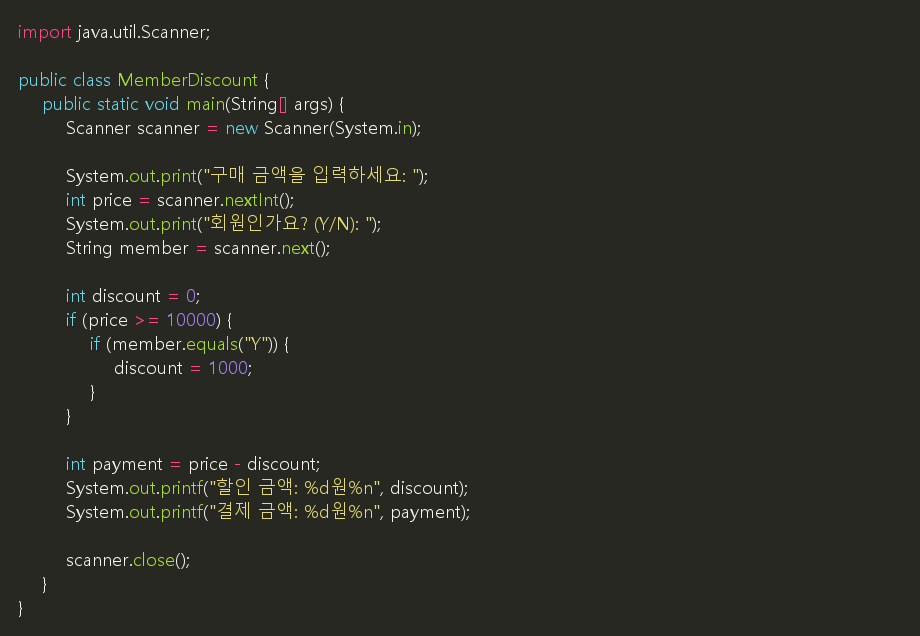
예상 실행 화면:
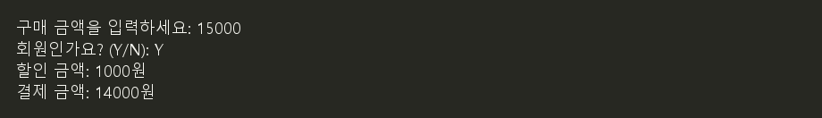
구매 금액은 0 이상의 정수라고 가정합니다. 두 조건 중 하나라도 만족하지 않으면 discount는 처음 값인 0을 유지합니다.
이 예제의 중첩 조건문은 다음처럼 한 조건문으로 표현할 수도 있습니다.
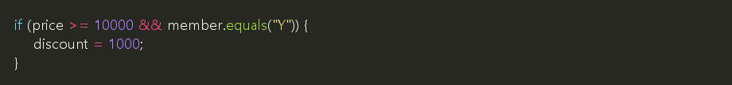
📌 두 조건을 모두 만족할 때 같은 작업 하나를 한다면 &&로 연결할 수 있습니다. 조건별로 다른 안내나 동작이 필요하면 중첩 조건문을 사용할 수 있습니다.
4.1 문자열 비교: equals()와 ==
Java에서 문자열의 내용을 비교할 때는 == 대신 equals()를 사용합니다.
| 표현 | 비교하는 것 |
|---|---|
member.equals("Y") |
문자열의 내용이 "Y"와 같은가? |
member == "Y" |
같은 문자열 객체를 가리키는가? |
💡 참고: 객체는 프로그램이 메모리에 만들어 사용하는 데이터입니다. 내용이 같은 문자열도 서로 다른 객체일 수 있습니다.
Scanner로 입력받은 문자열은 내용이 "Y"여도 == 비교가 거짓일 수 있습니다. 회원 여부를 판단할 때는 다음처럼 작성합니다.
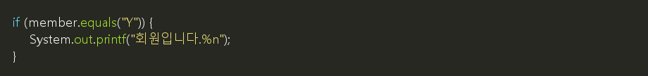
변수 이름이 number여도 String 타입이면 number.equals("Y")로 비교합니다. 비교 방법은 변수 이름이 아니라 자료형과 비교 목적에 따라 결정합니다.
4.2 Java·Python·JavaScript 표현 비교
같은 표현처럼 보여도 언어와 자료형에 따라 결과가 달라질 수 있습니다. 아래 문자열 비교에서 a, b는 문자열이며, JavaScript의 나눗셈 예는 일반 숫자형 Number 기준입니다.
| 비교할 내용 | Java | Python | JavaScript |
|---|---|---|---|
| 문자열 내용 비교 | a.equals(b) |
a == b |
a === b |
| 같은 객체를 가리키는지 비교 | 객체에서 a == b |
a is b |
객체에서 a === b |
| 정수 값끼리 나누기 | 5 / 2 → 2 |
5 / 2 → 2.5 |
5 / 2 → 2.5 |
| 양수의 나머지 | 5 % 2 → 1 |
5 % 2 → 1 |
5 % 2 → 1 |
| 음수의 나머지 | -5 % 2 → -1 |
-5 % 2 → 1 |
-5 % 2 → -1 |
| 문자와 문자열 | 'Y'는 char, "Y"는 String |
둘 다 문자열 | 둘 다 문자열 |
| 조건식에 숫자 사용 | if (1)은 오류 |
if 1: 가능 |
if (1) 가능 |
| 문자열을 숫자로 변환 | Integer.parseInt("123") |
int("123") |
Number("123") |
💡 참고: Java의 조건식은 참·거짓을 나타내는 boolean 값이어야 합니다. Python과 JavaScript는 숫자 0을 거짓으로, 0이 아닌 숫자를 참으로 판단할 수 있습니다.
나머지 연산자 %는 음수에서 차이가 납니다. Java와 JavaScript는 결과가 0이 아니면 왼쪽 수의 부호를 따릅니다. Python은 결과가 0이 아니면 오른쪽 수의 부호를 따릅니다. 예를 들어 -5 % 2의 결과는 Java·JavaScript에서 -1, Python에서 1입니다.
📌 Java에서 음수를 포함한 홀수를 검사하려면 number % 2 != 0을 사용합니다. number % 2 == 1만 검사하면 음수인 홀수를 놓칩니다.
참고: Java 나머지 연산, Python 이항 산술 연산, JavaScript 나머지 연산
4.3 언어별 나머지 연산과 mod 비교
아래 표는 정수와 양수인 나누는 수 b를 기준으로 비교합니다. C는 C99 이후, JavaScript는 일반 숫자형 Number를 기준으로 합니다.
| 비교 | C | Java | Python | JavaScript | NumPy |
|---|---|---|---|---|---|
| 나머지 연산 | a % b |
a % b |
a % b |
a % b |
a % b — 배열에도 적용 |
| mod 함수 | 표준 정수 mod 함수 없음 | Math.floorMod(a, b) |
% 사용 |
내장 mod 함수 없음 | np.mod(a, b) |
5 % 2 |
1 |
1 |
1 |
1 |
1 |
-5 % 2 |
-1 |
-1 |
1 |
-1 |
1 |
| 음수 입력에서도 0 이상으로 만들기 | 나머지가 음수이면 b를 더함 |
Math.floorMod(a, b) |
a % b |
((a % b) + b) % b |
np.mod(a, b) |
Java의 Math.floorMod(-5, 2)는 1입니다. Math는 별도 import 없이 사용할 수 있습니다. NumPy는 import numpy as np로 불러오며, 배열이면 각 원소의 나머지를 계산합니다.
C에서 나머지를 0 이상으로 만드는 방법은 다음과 같습니다.
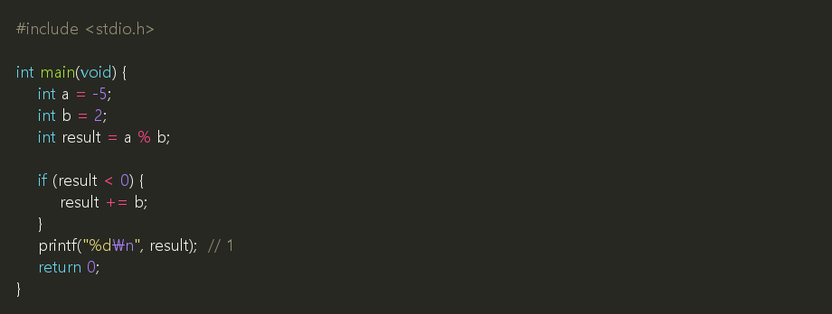
📌 C·Java·JavaScript의 %는 결과가 0이 아니면 왼쪽 수의 부호를 따릅니다. Python·NumPy의 %와 Java의 Math.floorMod()는 결과가 0이 아니면 오른쪽 수의 부호를 따릅니다. 따라서 0 이상의 결과를 얻는다는 설명은 b > 0일 때 적용합니다.
참고: C 정수 나눗셈과 나머지, Java Math.floorMod), NumPy mod
5. switch: 메뉴 번호로 선택하기
switch는 하나의 값을 정해진 여러 값과 비교할 때 사용합니다. 여기서는 정수 메뉴 번호를 비교합니다.
| 표현 | 역할 |
|---|---|
switch (menu) |
비교할 값을 지정합니다. |
case 1: |
값이 1일 때 실행을 시작합니다. |
break; |
현재 switch를 빠져나갑니다. |
default: |
일치하는 case가 없을 때 실행합니다. |
파일 이름은 DrinkMenu.java로 저장합니다.
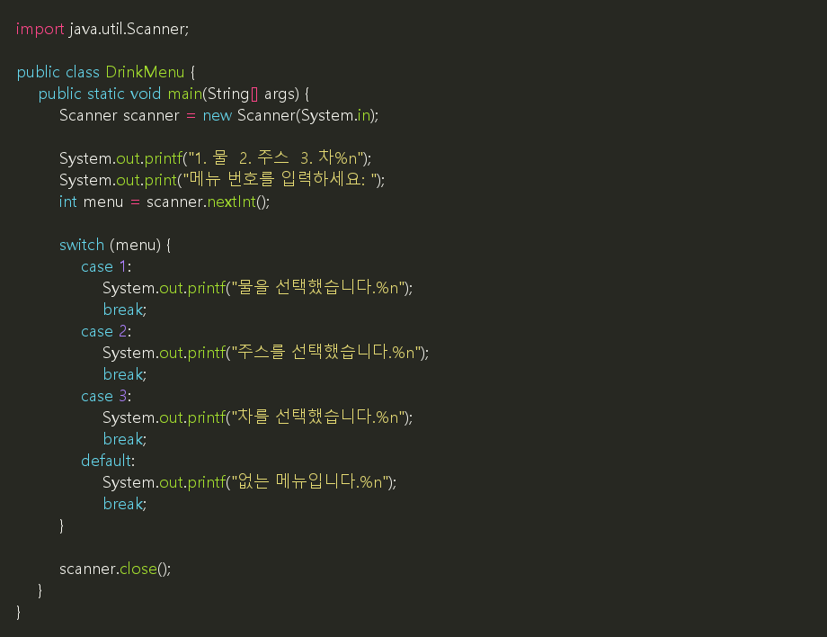
예상 실행 화면:
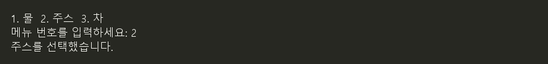
⚠️ 주의: 위처럼 콜론(:)을 쓰는 switch에서 break를 빠뜨리면 뒤쪽 case의 코드까지 이어서 실행할 수 있습니다.
| 판단할 내용 | 사용할 문법 |
|---|---|
| 점수 범위나 여러 조건의 조합 | if ~ else if |
| 정해진 메뉴 번호와 일치하는지 확인 | switch |
5.1 default가 없으면 어떻게 될까?
위처럼 정수를 비교하는 switch문에서는 default를 생략할 수 있습니다. 하지만 일치하는 case가 없으면 switch 안의 코드를 하나도 실행하지 않고 다음 문장으로 넘어갑니다. 오류가 발생하거나 입력을 다시 받는 것은 아닙니다.
파일 이름은 MenuWithoutDefault.java로 저장합니다.
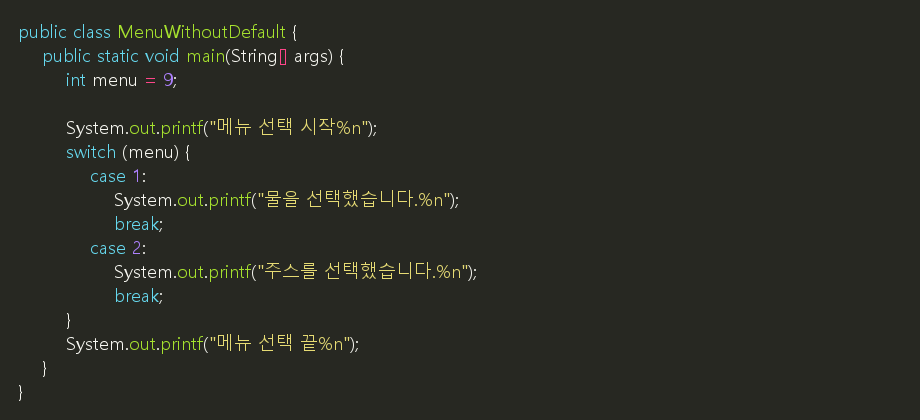
예상 실행 결과:
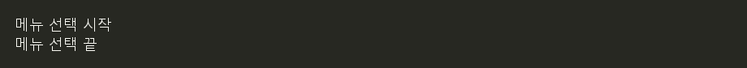
menu가 9이므로 어떤 메뉴 안내도 출력되지 않습니다. switch 다음의 메뉴 선택 끝은 그대로 출력됩니다. 사용자는 선택이 처리되었는지 알기 어려울 수 있습니다.
| 조건 | 실행 결과 |
|---|---|
menu = 1 |
시작 → 물 선택 안내 → 끝 |
menu = 9, default 없음 |
시작 → 끝. 잘못된 메뉴 안내가 없음 |
menu = 9, 아래 default 추가 |
시작 → 없는 메뉴 안내 → 끝 |
잘못된 선택을 알려 주려면 마지막 case의 break; 다음, switch의 닫는 중괄호 앞에 다음 내용을 추가합니다.
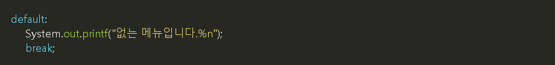
📌 default는 일치하는 case가 없을 때의 처리를 담당합니다. 모든 분기에 break가 있는 위 예제에서 default 생략은 아무 분기도 실행하지 않는 상황, break 생략은 선택된 분기에서 뒤쪽 코드까지 이어지는 상황입니다.
6. 연습: 입장료 계산
- 파일 이름은
AdmissionFee.java로 저장합니다. Scanner로 나이 하나를 정수로 입력받습니다.- 나이가 0~120 범위를 벗어나면
나이를 확인하세요.만 출력합니다. - 정상 범위에서는 아래 기준으로 입장료를 출력합니다.
| 나이 | 입장료 |
|---|---|
| 0~7세 | 무료 |
| 8~18세 | 5,000원 |
| 19~64세 | 10,000원 |
| 65~120세 | 무료 |
예상 실행 화면:
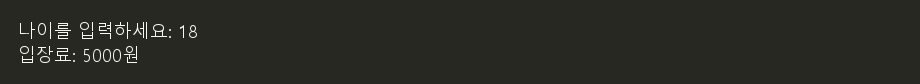
무료인 경우에도 입장료: 0원으로 출력합니다. 잘못된 범위를 먼저 검사하고, 이후 나이가 작은 구간부터 판단해 봅니다.
✅ 확인할 것:
-1,121에서는 입장료를 출력하지 않습니다.7,8,18,19,64,65를 넣어 구간이 정확히 나뉘는지 확인합니다.- 하나의 입력에 결과가 중복 출력되지 않습니다.
컴퓨터는 정수를 0과 1의 조합으로 저장합니다. 이번에는 정수의 각 비트를 직접 다루는 연산자를 알아봅니다.
- 이진수와 비트의 의미를 이해합니다.
- 비트 연산과 논리 연산을 구분합니다.
- 비트 연산자와 시프트 연산자를 사용합니다.
7. 비트연산자
7.1 비트와 이진수
비트(bit)는 0 또는 1을 나타내는 단위입니다. 이진수는 0과 1로 수를 표현하는 방법입니다. 오른쪽부터 각 자리의 값은 1, 2, 4, 8처럼 두 배씩 커집니다.
| 십진수 | 이진수 표현 | 계산 |
|---|---|---|
| 5 | 0101 |
4 + 1 |
| 6 | 0110 |
4 + 2 |
| 7 | 0111 |
4 + 2 + 1 |
Java의 int는 32비트 정수입니다. 위 표는 이해하기 쉽게 오른쪽 4비트만 표시했습니다.
7.2 비트 연산자 비교
아래에서 a = 5, b = 3입니다. 두 수의 오른쪽 4비트는 각각 0101, 0011입니다.
| 연산자 | 이름 | 각 비트를 계산하는 방법 | 예 | 결과 |
|---|---|---|---|---|
& |
AND | 둘 다 1이면 1 | a & b |
0001, 즉 1 |
| |
OR | 하나 이상 1이면 1 | a | b |
0111, 즉 7 |
^ |
XOR | 서로 다르면 1 | a ^ b |
0110, 즉 6 |
~ |
NOT | 0과 1을 뒤집음 | ~a |
-6 |
💡 참고: XOR는 두 비트가 같으면 0, 다르면 1입니다.
⚠️ ~5는 4비트만 뒤집는 연산이 아닙니다. int의 32비트를 모두 뒤집습니다. Java는 음수를 2의 보수 방식으로 저장하므로 정수 x에 대해 ~x는 -x - 1과 같습니다.
파일 이름은 BitwiseCheck.java로 저장합니다.
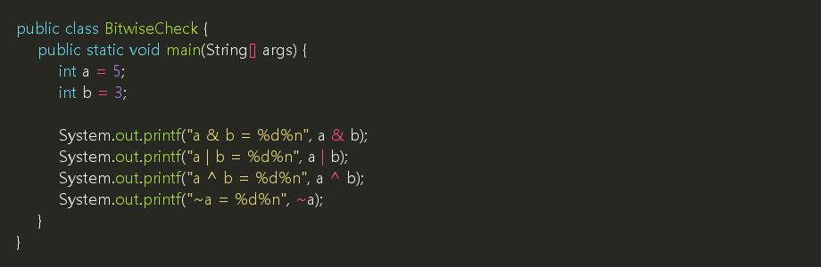
예상 실행 결과:
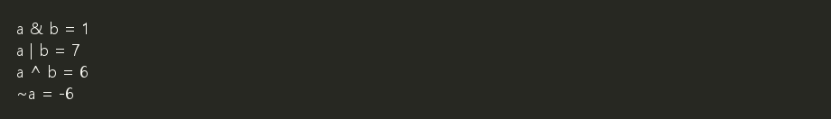
7.3 논리 연산자와 구분하기
| 비교 | 논리 연산 | 정수의 비트 연산 |
|---|---|---|
| 대상 | 참·거짓 조건 | 정수의 각 비트 |
| 주요 연산자 | &&, ||, ! |
&, |, ^, ~ |
| 예 | score >= 0 && score <= 100 |
5 & 3 |
| 결과 | true 또는 false |
정수 |
📌 Java의 &, |, ^는 참·거짓 값에도 사용할 수 있습니다. 다만 &, |는 &&, ||와 달리 왼쪽 값만으로 결과가 정해져도 오른쪽 식을 평가합니다. 조건문에서는 앞에서 배운 &&, ||를 우선 사용합니다.
7.4 시프트: 비트를 옆으로 이동하기
시프트(shift)는 비트를 왼쪽이나 오른쪽으로 이동하는 연산입니다. 아래 예의 숫자 1은 한 자리 이동한다는 뜻입니다.
| 연산자 | 동작 | 예 | 결과 |
|---|---|---|---|
<< |
왼쪽 이동, 오른쪽 빈자리는 0 | 5 << 1 |
10 |
>> |
오른쪽 이동, 왼쪽 빈자리는 기존 부호 비트 | 5 >> 1 |
2 |
>>> |
오른쪽 이동, 왼쪽 빈자리는 0 | 5 >>> 1 |
2 |
부호 비트는 정수의 가장 왼쪽 비트입니다. int에서 0이면 0 또는 양수이고, 1이면 음수입니다. 양수에서는 >>와 >>>의 결과가 같지만, 음수에서는 다릅니다. -8 >> 1은 -4, -8 >>> 1은 2147483644입니다.
⚠️ 왼쪽으로 이동하면 원래 왼쪽에 있던 비트가 사라질 수 있습니다. 값이 표현 범위를 벗어나면 예상과 다른 값이 되므로, 항상 곱셈을 대신할 수 있는 것은 아닙니다.
7.5 예: 마지막 비트로 짝수·홀수 판별하기
이진수의 가장 오른쪽 비트는 짝수이면 0, 홀수이면 1입니다. number & 1은 가장 오른쪽 비트만 남깁니다.
파일 이름은 BitEvenOdd.java로 저장합니다.
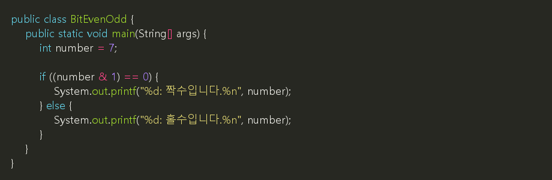
예상 실행 결과:
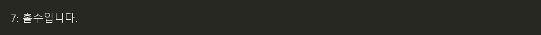
⚠️ (number & 1)을 먼저 계산하도록 괄호로 묶습니다. 괄호를 빼면 ==가 먼저 계산되어 컴파일 오류가 발생합니다.
7.6 연습: 결과 예상하기
다음 식의 결과를 예상한 뒤 BitwiseCheck.java의 값을 바꾸어 확인합니다.
| 식 | 예상 결과 |
|---|---|
6 & 3 |
2 |
6 | 3 |
7 |
6 ^ 3 |
5 |
~0 |
-1 |
6 << 1 |
12 |
6 >> 1 |
3 |
✅ 확인할 것:
&와&&가 다루는 값을 구분합니다.~가int의 32비트를 모두 뒤집는다는 점을 설명합니다.- 짝수·홀수 예제의
number를0,8,-3으로 바꾸어 확인합니다.
- teaching/materials/java/6-1_condition_applications.md최종 수정일: 2026-11-05 12:31
- teaching/materials/java/6-2_bitwise_operators.md최종 수정일: 2026-11-05 10:16